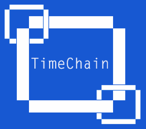
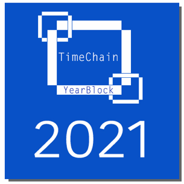

|
 |
The TimeChain: A perpetual
censorship-resistant record of history on the Ethereum Blockchain |
1. The old way of recording humanity’s story
Since Herodotus first authored the Histories[1],
there has been an official record of history. However, for just as long, this
has meant that the stories of humanity have been recorded and transmitted by a
centralized authority.
As with the financial institutions and other centralized
organizations, a powerful minority has controlled the historical narrative. But
this is even more personal than power over our financial transactions. Those in
power have promoted some narratives over others, or even more worryingly,
sometimes completely erased the stories of marginalized groups.
That means that those stories of the past are gone
forever. Our knowledge of the past shapes not only our identity as a
civilization and culture, but also who we are as people. It is not just about
important dates, wars, or famous leaders.
It is also about the members of our family, or loved
ones. It is about the year we were born or the significant events in our life.
It is therefore so important to have a complete and unbiased account of all of
these stories and events throughout time.
2. Digital Assets
On October 31st, 2008[2], a white paper called
"Bitcoin: A Peer-to-Peer Electronic Cash System" introduced bitcoin to
the world. It would take more than a year for the first real transaction to
take place, when two pizzas were bought for 10,000 bitcoins on May 22, 2010[3].
While bitcoin was valued at only $0.08 in 2010, its value has soared to over $60,000
per bitcoin in 2021, making those two pizzas the most expensive ever sold by
today’s valuation.[3]
As in the above example, there has been an incredible
growth in the value of bitcoin as a digital asset - early investors in Bitcoin
have become billionaires. It can perhaps be considered the most lucrative store
of value in the world, and has been called “digital gold”. But bitcoin has not
just introduced a new store of value. Bitcoin and its Blockchain created a revolution
in the way humanity transacts, and unleashed a whole ecosystem of valuable new
assets that have mirrored its exponential growth in valuation over time.
In 2013, Vitalik Buterin
described Ethereum in a white paper.[4] He proposed a
new platform which would allow for decentralized applications to efficiently
run on a Blockchain. The first live release of Ethereum known as Frontier was
launched in 2015. For the first time, smart contracts and distributed
applications (Dapps) could be run in a decentralized
way. Entire communities and decentralized organizations have emerged from this
revolution, including decentralized finance finance (DeFi), and the trading of digital assets in the forms of
non-fungible tokens (NFTs).
Unlike Bitcoin or Ether, an NFT is a digital asset that
is unique, for example a piece of art. The first Ethereum NFTs were the Larva
Labs CryptoPunks, in 2017. Their supply is limited to
10,000, and these NFTs were initially released for free. Just as with Bitcoin,
their valuation has experienced rapid growth, with a single CryptoPunk
selling for as much as $7.58 million in 2021.[5]
Since its first introduction, there has been a massive
growth within the NFT ecosystem, with hundreds of projects trading assets from
physical to purely digital. Many times over, new asset
classes have created opportunities for investors before they increased
significantly in value. This has
included transfers of real-estate ownership, virtual assets in games,
historical trading cards such as BitRomans, and many
more unique assets that have expanded beyond the original applications of NFTs.
With the TimeChain, we aim to transform events and historical
items into NFTs that can be freely traded on the Blockchain. This creates a whole
class of new asset types on the Ethereum Blockchain that have history itself
backing up their value. But this project is also founded with the mission to
create a record of history that is virtually indestructible and authored by people
from the entire world.
3. Censorship-resistant information
storage on the Blockchain and web3
The idea
of community authored content is not new, and was the backbone of web2.0. Iconic
examples such as The Internet Archive and Wikipedia aimed to collect humanity’s
knowledge into one place. But it is by now clear that the architecture
underlying web2.0 and today’s internet is not a medium for persistent data
storage. We do not have control over our
data. Rather, data is centrally stored and managed on servers. In fact, the
average webpage exists for only 100 days before it disappears forever.[6] Even if we create content on sites that are
community edited, they are not community owned, and the information we create
can be censored or removed forever at a moment’s notice. Wikipedia, for
example, is controlled by a single organization, despite the community-sourced
creation of its content. This means that a single point of failure, be it
financial, legal, or technical, can shut down this site forever. And the same
applies to every other information medium on the web that we have come to take
for granted.
But besides data
persistence, other issues have gradually crept up as the internet has matured.
Data breadth and quality is another hurdle for community edited portals. While
community authorship first revolutionized content creation in the early days of
the internet, this growth has slowed, and content quality has degraded. Even
Wikipedia shows vast discrepancies in coverage of topics, biased by who
volunteers to contribute or edit content. Because authors lack any financial
incentives and have no actual ownership of the content they create, there is a
motivation barrier to further development. The Blockchain, however, could be revolutionary
for content creation in that it allows both complete decentralization and at
the same time ownership of assets that one creates. This potential has not yet been
utilized for a system of community knowledge creation, until this project.
Web3, is a
new distributed web infrastructure, that blends Blockchain technology with
peer-to-peer (P2P) networks to ensure decentralization and data persistence. In Web3, data is stored in multiple copies on
a P2P network. The Blockchain introduces a governance layer that runs on top of
the current internet, and allows for two people who do not know or trust each
other to reach and settle agreements over the Web.
As the Blockchain was not designed to hold vast
amounts of data, but instead to act as a ledger of transactions, other P2P
technologies work alongside it to realize web3 architecture. The InterPlanetary File System (IPFS)
is a protocol and P2P network that uses content-addressing to
uniquely identify each file in a global namespace connecting all
computing devices. While HTTP downloads files from one computer at a time, IPFS
instead gets pieces from multiple computers simultaneously. IPFS improves
significantly on bandwidth performance, and when combined with the Blockchain,
allows for decentralized, censorship-resistant creation of content that will
continue to be available on the internet. This system makes it very difficult
for any one entity to remove information from this network once it is
broadcast, and makes it easy for anyone to contribute information to it.[7]
With web3, because
content-creators will own the records they create, they will see increased
incentives to create knowledge in the form of NFTs. There will be incentives to
contribute to niche areas of knowledge that have not to-date been explored. Further,
these assets could be traded, creating community authorship. But unlike the days
of HTTP, records one creates will be persistently available to the community,
creating a permanent record of this knowledge. Free trade on the Blockchain will
further select for the proliferation of valuable information.
By combining the Blockchain
and IPFS we envision the creation of decentralized, censorship-resistant,
stores of information on the internet that can be available to humanity for
ages. In this project, we are excited to apply these technologies to
immortalize the record of history and to give ownership to the community of
portions of the historical narrative. Read below to see how we are making this
vision a reality.
4. Introducing the TimeChain
What
if we could record the events of all time on the Blockchain, creating a
distributed, censorship-resistant record that is practically impossible to
erase? The goal of this project is to create for the first time a complete
record of human history on the Ethereum Blockchain. Each YearBlock allows its
owner to own the contents of an entire year in history. Only a single YearBlock
will ever be created for any year in history. Due to the significant events and
people that are captured in each YearBlock, they will gain historic value in
the coming decades due to their early storage on the Ethereum Blockchain.
Moreover, because there have literally been years, or in some cases decades or
centuries, of significance attached to the contents of some YearBlocks, it is
expected that their value will only increase as time goes by, making them
extremely valuable and stable investments.
Also,
many YearBlocks will be created with unlockable contents that will contain
historical documents and other records to be perpetually kept on the Blockchain
and IPFS. This will allow these records of history to continue to live on
decades after their initial creation. In addition, many YearBlocks will be
minted along with other NFTS containing records and real historical assets associate
with that year. Ownership of YearBlocks will come with ownership of those NFTs,
containing rich historical value in themselves.
But
owners of YearBlocks don’t just statically own that one NFT and its linked
assets. True to the goals of this project, ownership of a YearBlock gives its
owner the exclusive right to freely edit
the contents of that year in history.
They
can mint months and additional historical records for that year as NFTs. Proof
of ownership of the YearBlock in their wallet forever verifies the authenticity
of their creations. They can trade or sell their ownership not just of that
YearBlock, but smaller portions of that year that they minted, allowing others
to own and expand upon them. In this way, the record of history becomes
something that everyone can partake in.
But
the free trade of these assets on the Ethereum Blockchain also acts as a mechanism
to preserve the authenticity of the historical record. Owners of YearBlocks are
incentivized to keep and inform others about their YearBlocks to increase their
value, and also when they create new content NFTs for that year, they will try
to create narratives that they know will be accepted by others in the
community. Free trade of these assets within the ecosystem ensures that only
assets containing information of value will continue to attract interest.
It
is anticipated that YearBlock owners will also be able to gain valuable inputs and
assets from others in the community who would like to contribute content to
their year in exchange for ownership of some of the NFT assets they mint. In
this way the record of our collective story will be
propagated by everyone. And because of its decentralized storage, the TimeChain
will keep these records safe as assets, free from censorship or seizure. The
increase in value of all of these records throughout time will also ensure that
the stories they contain will continue to be transmitted.

Each YearBlock holds essential
information about our history, and gives its owners the exclusive right to mint
new records for that year as NFTs.
Each
YearBlock comes with the following properties that characterize that year in
history:
• Significant discovery in that year
• Major war in that year
• Plague or pandemic
• Birth of significant person
• Significant cultural achievement
• Significant political event
• Associated gems and Moments at first minting
• Religious significance
• Artistic achievement
• Natural disaster of record
• Technological significance
Nevertheless,
we expect that other traits will probably influence the YearBlock's value as
well. Some years in history are just emotionally more significant to some
people than others, while some years may hold especial personal significance.
5. YearBlock ownership and the power to mint history
Upon
transfer of a YearBlock, the owner receives ownership of a toolkit as
unlockable content that gives them the power to mint MonthBlocks, TimeGems, and
Historic Moments associated with that year as NFTs. Due to the immutable nature
of these assets on the Blockchain, the ownership and validity of all of these assets
will forever be traceable from creation, to all of the transfers that occur
between accounts. As this community grows, we plan for the creation of
community portals and websites that will track in real-time the expanding
universe of assets available, that could be researched as a trove of
information by both students of history and future collectors.
Free
minting of this collection on OpenSea can allow owners of YearBlocks to create
as many records as they wish. They can mint their birthday for example, or mint
a month containing information about their favorite person, as well as a
recording of their favorite historical moment.
The
principle types of NFTs associated with a YearBlock are:
• MonthBlock: textual contents
containing information about that month within the YearBlock
• TimeGem: an image, audio
recording, video, text file, pdf or any other file type, or possibly a link to
a physical artifact or object, that is associated with this YearBlock. Just
like a MonthBlock, it is an NFT that can be transmitted on the Blockchain.
• Historic Moment: Moments in history
that live on as the most significant events of all time. This NFT summarizes a
particularly important moment in history, and can also provide IPFS links to articles
or books that further contextualize or commemorate the event. YearBlock owners
can not only own Moments created by this collection, but they can create ones
themselves and freely trade them through the Blockchain.
In
total, there will be 2,020 YearBlocks minted covering the years of the current
era, and select YearBlocks to represent significant years B.C. Starting with
the year 2021, a single YearBlock will be minted once a year on January 1st
to record the major events of the previous year. To enable the most complete
record of history possible, each YearBlock at initial minting is meant to
contain the key events of that year, but is of course not comprehensive. It is
expected that the other assets that owners of the YearBlock will create will
capture this information, and as the YearBlock’s ownership changes through
trades or sales in time, the information will continue to grow. Because of this
motivation, unlike YearBlocks, MonthBlocks can exist in multiple copies (i.e.,
January 2010-a, January 2010-b). This allows for multiple chances to record
information. As all of these records are publicly viewable on the Blockchain
and IPFS, the value only increases with the richness of records that are
associated with all of the years and months of time.
Just
as with the creation of new assets for each YearBlock, transfer is easily
performed with the tools provided by this collection on OpenSea. The owner of the YearBlock can transfer the YearBlock and any
of the associated assets they chose as a bundle. There is no gas fee to create
a bundle, and in this way the collector of that
YearBlock can not only gain access to creation of new content to that year, but
to the richness of new information that has been created for it. Of course,
some records for a year, like perhaps your birthday or some special moment may
be something you wish to hold onto. Thus the
flexibility inherent in the TimeChain allows owners to sell or trade as many or
as few assets as they wish. And all of this can be traced with absolute
certainty to verify authenticity through the Ethereum Blockchain.
MonthBlocks hold an essential record of
the events of that month in history and can only be minted by the owner of the
YearBlock for that year, but can be owned by anyone. The QR code on each
MonthBlock provides a convenient way to verify YearBlock ownership and its authenticity.
TimeGems allow YearBlock owners to
place any historical artifact, reference work, artwork, or any other digital or
physical object onto the Blockchain and link it with the years in history they
own. TimeGems can easily be minted by the owner of the YearBlock for that year,
and owned by anyone. The QR code on each TimeGem provides a convenient way to
verify YearBlock ownership and its authenticity.
Not
all owners of a YearBlock may wish to create new content. Maybe they would like
to savor their ownership of a particularly important year in history. But it is
expected that their ownership of a YearBlock will certainly attract interest
from others who would like to contribute to them. Ownership of a YearBlock
after all gives this person final say in any new content created for that year.
They will become the head of a community that could form around each year, or
maybe savor their year in anonymity. Just like the range of years in history
with their unique personalities and attributes, we expect there will be a wide
spectrum of collectors. History is ours for collecting, and the making!
6. References
[1] Herodotus, 430 B.C. The Histories. https://archive.org/details/herodotusnewlite00hero
[2] Nakamoto, 2008 - https://bitcoin.org/bitcoin.pdf
[3] https://www.pmq.com/internet-commemorates-the-man-who-spent-millions-worth-of-bitcoin-on-pizza/
[4] Buterin, 2013 - https://ethereum.org/en/whitepaper/
[5] https://www.larvalabs.com/cryptopunks/details/3100
[6] https://blogs.loc.gov/thesignal/2011/11/the-average-lifespan-of-a-webpage/
[7] Nguyen, K., et al. 2009. http://sites.science.oregonstate.edu/~kovchegy/web/papers/p2p-vdn.pdf
Twitter account: @0xTimeChain
OpenSea collection: @TimeChain